The Roots
Long before I wrote my first line of code or designed my first CAD model, I was driven by numbers. Training for Mathematics Olympiads since middle school taught me how to break down complex problems into logical, actionable steps.
At BILSEM, this mindset met the scientific method. But the moment that truly changed my perspective was watching other students build FIRST Lego League robots. I realized that the equations I enjoyed solving could become something tangible.
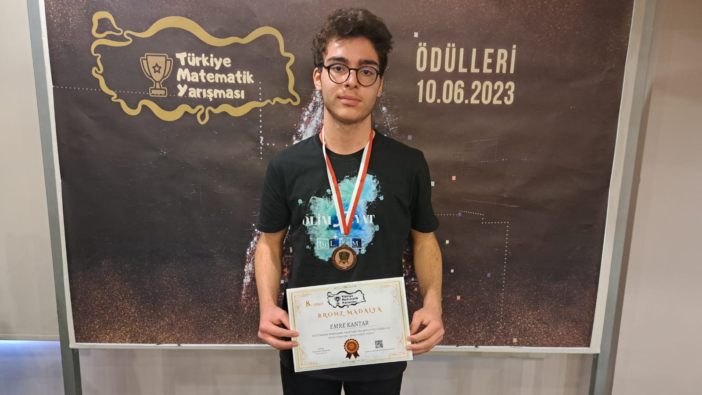
Mathematics Olympiad 2023
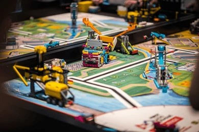
FIRST LEGO League
The First Builds
Turning theory into real systems was both challenging and exciting. My first project, AGROBOT, forced me to teach myself SOLIDWORKS CAD and Arduino from scratch. I quickly branched out, applying my mathematical background to generate melodies from galaxy images for Cosmic Acoustics, and contributing to a flying car simulation, FlyThrough.
At the same time, I began exploring leadership and community engagement beyond technical work. At my school, I joined Sustain4Globe community as an environmental volunteer and took on my first management role as Media Team Lead at CicekliAI. I was learning that engineering is not only about building systems—it is also about communicating ideas and collaborating with people.
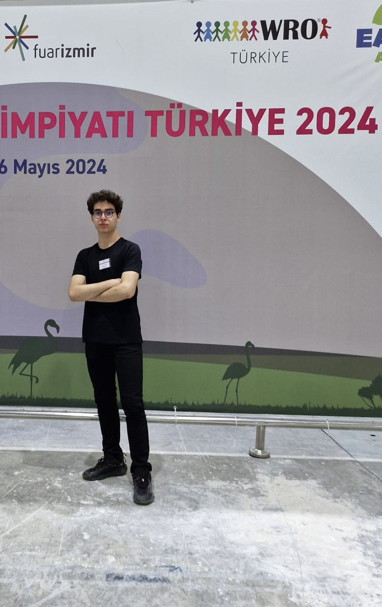
World Robot Olympiad 2024
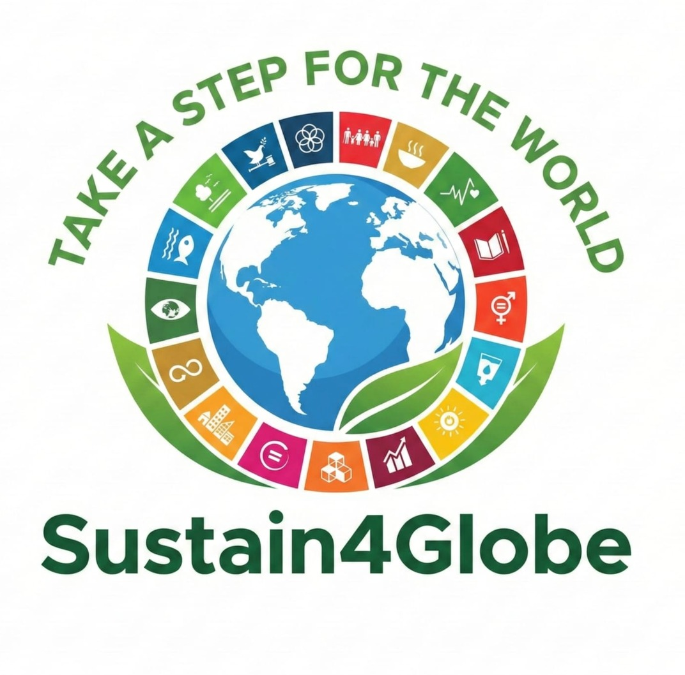
Sustain4Globe
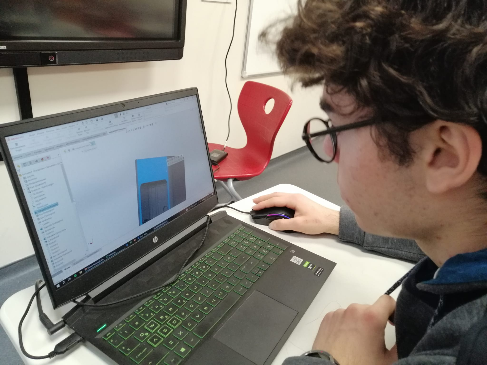
AGROBOT Project
“I realized that building projects was only half the challenge. The real challenge was building communities and guiding diverse minds toward a shared vision.”
Scaling Impact, Sharing Knowledge
Learning CAD and electronics on my own was challenging, but it showed me the value of supportive communities. Inspired by my experiences at CicekliAI and Sustain4Globe, I decided to create similar opportunities.
I founded EMT Projects to spread technical education. Over two academic years, we delivered more than 30 hours of CAD and electronics training to over 50 students. At the same time, I tutored a middle school student in mathematics for 6 months, in my sophomore year.
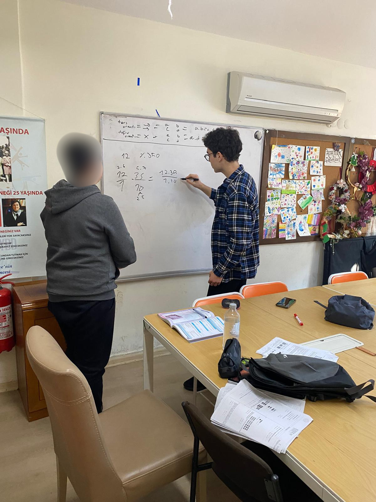
Math Tutoring Session
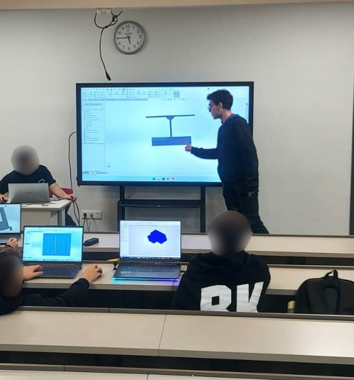
EMT Projects Lecture
Engineering Meets Reality
After building projects and teaching others, I wanted to understand engineering at a professional scale. Summer programs at Middle East Technical University (METU) and Sabancı University expanded my theoretical perspective and exposed me to new ways of thinking.
However, the most transformative experience came at the Izmir Plant of Johnson Electric. There, I developed an automated feasibility and cost analysis system for new pump assembly lines. For the first time, I experienced the realities of engineering. It wasn’t just about making something work; it was about making it efficient, scalable, and practical.
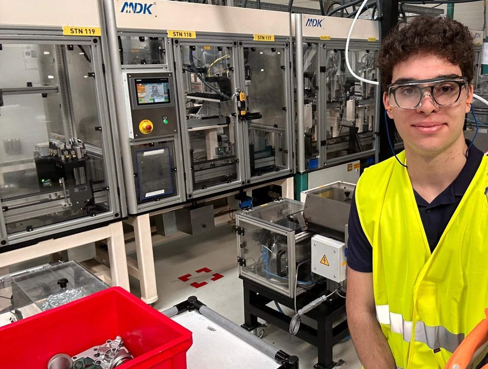
Johnson Electric, Izmir Plant

METU Summer School
"Emre demonstrated strong analytical skills, a proactive mindset, and excellent collaboration... He delivered results that exceeded expectations. His contributions reflect both technical competence and a mature approach to problem-solving."
Manufacturing Engineering Manager
Johnson Electric, Izmir Plant
The Impact of FRC
Joining FRC Team 4th Dimension – 6429 brought together everything I had learned so far. The high-pressure environment of competitive robotics demanded accurate 3D CAD design, effective collaboration, rapid problem-solving, and continuous iteration.
It was no longer about sketches in SOLIDWORKS. Every component had to be manufacturable, reliable, and capable of performing under real competition conditions. FIRST Robotics Competition (FRC) taught me the critical difference between a design that works on a screen and a design that survives reality.

FRC Haliç Regional 2026 Pit Area
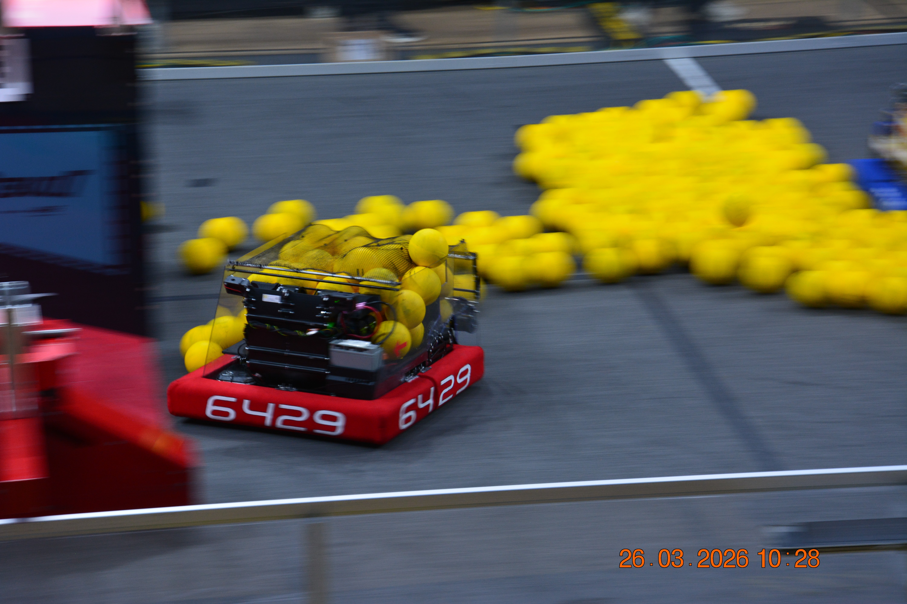
FRC Team 6429 Robot
Multidisciplinary Action
Parallel to a relentless FRC season, my junior year evolved into an intensive period of multidisciplinary work. My commitment to environmental issues led me to join the Management Team at Sustain4Globe. This awareness directly inspired my laboratory research on developing a CO₂ adsorbent from tea waste.
At the same time, my role at CicekliAI evolved into AI Research Team Lead, allowing me to explore the intersection of emerging technologies and real-world challenges. Concurrently, I designed the digital prototype for VitaLink, an intraoral smart sensor project.
Today, I am working on QuantumQuake, a multi-task completion robot, where I lead the robot design process.
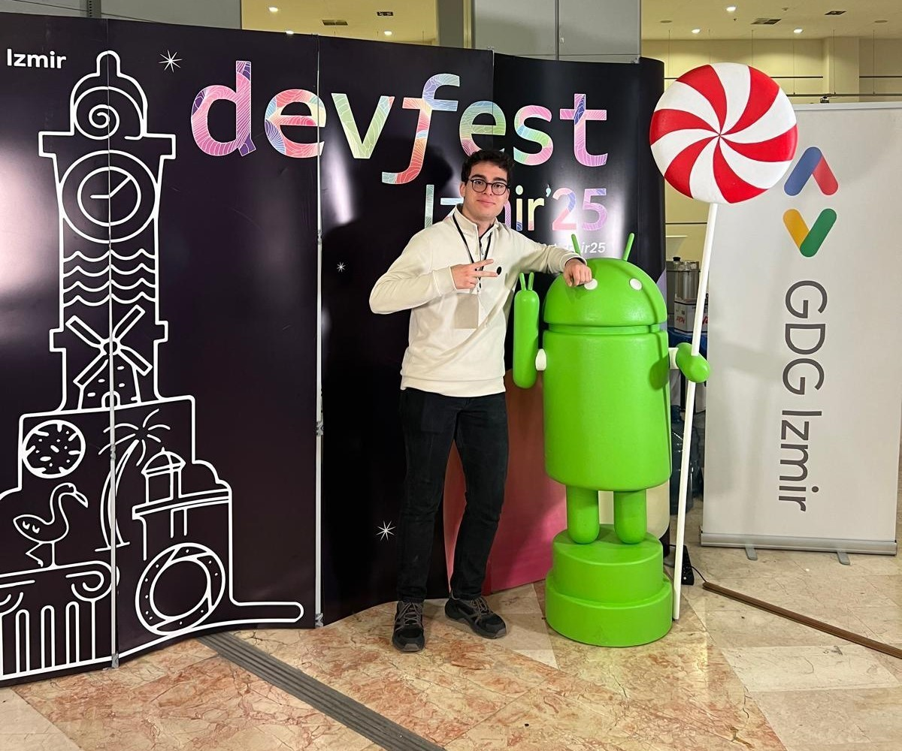
CicekliAI DevFest'25 Exhibition
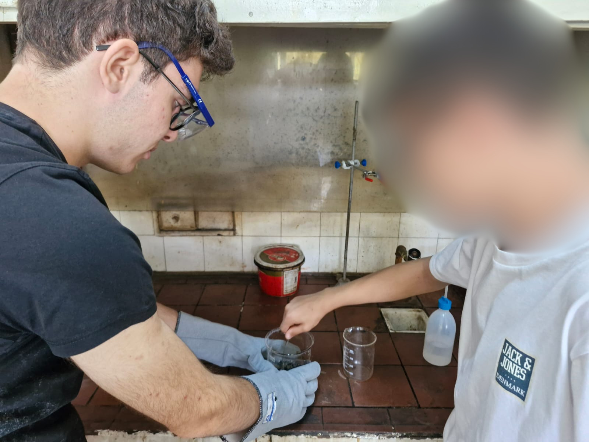
CO₂ Adsorbent Lab Research
The Road Ahead
As I look toward my senior year, my focus is shifting from expanding outward to mastering my craft.
My role as a CAD Team Member at FRC Team 6429 will continue, allowing me to approach robot design with greater experience and a deeper understanding of engineering principles. At EMT Projects, I am transitioning into a Student Mentor role, passing on the knowledge and opportunities that once shaped my own journey.
During my senior year, I plan to focus on personal engineering and maker projects, refining my hardware skills and preparing for the next stage of my journey — a mechanical engineering program at a reputable university.
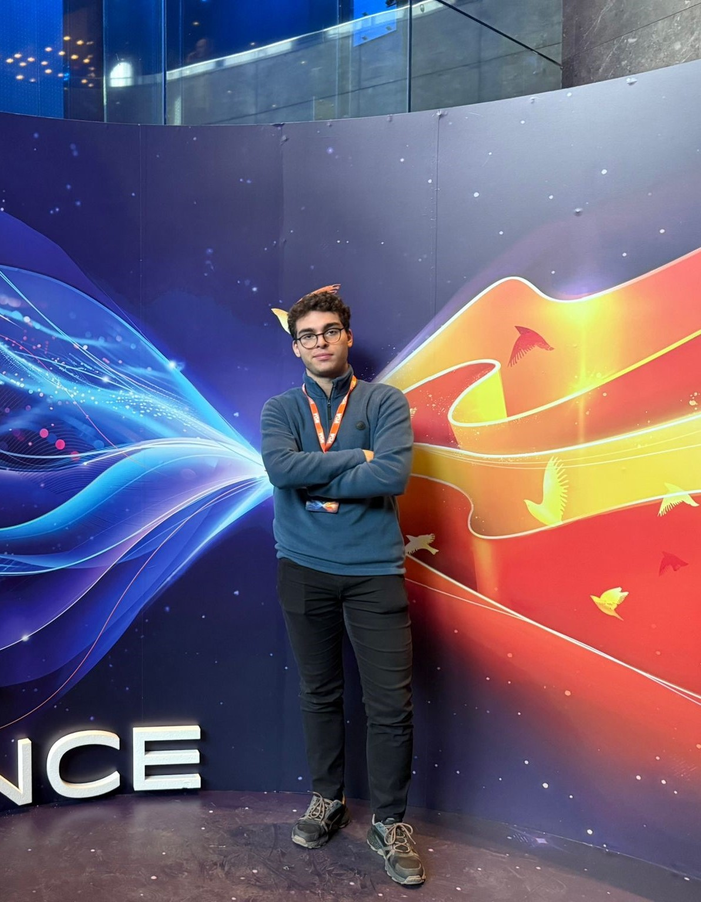
YGA Summit 2025